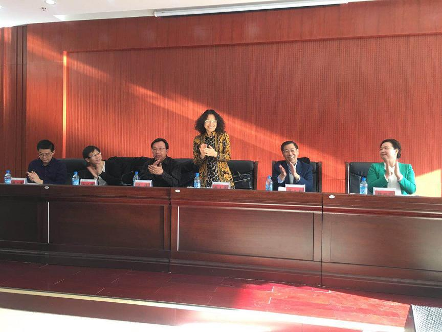
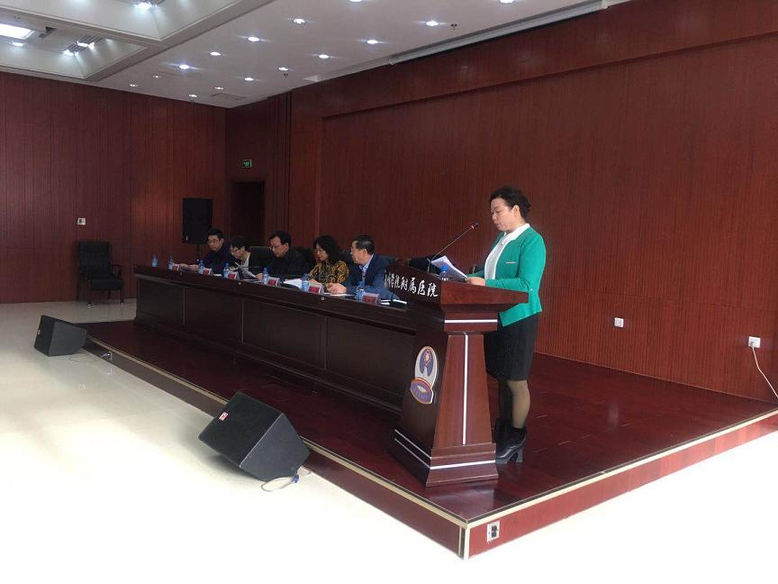
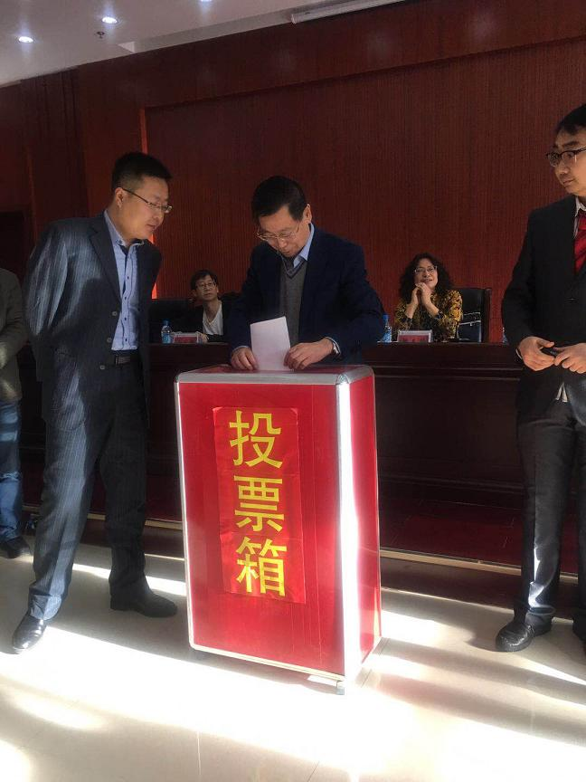
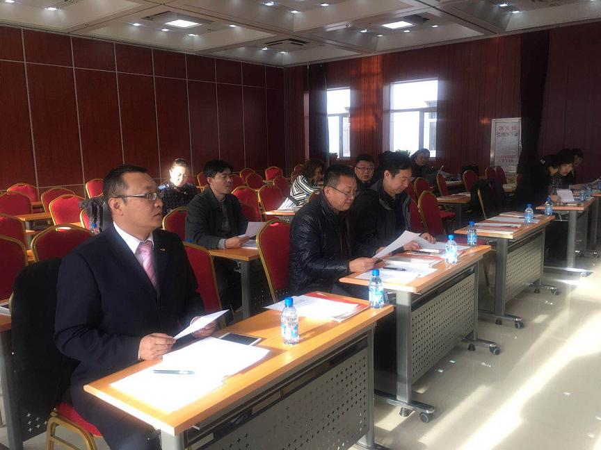

中国农工民主党赤峰学院基层委员会召开补选委员及成立支部大会

2017年12月30日，农工党赤峰学院委员会补选委员和成立学院第一支部、学院第二支部会议在赤峰学院附属医院五楼会议室召开。

会议由学院委员会韩明玥主持。

第一、补选学院委员会班子成员。学院委员会班子两名同志因为工作和年龄原因不再担任委员会委员，通过投票补选郭俊杰和李慧担任学院委员会委员，郭俊杰担任副主委、李慧担任组织委员。
第二、成立学院第一支部和学院第二支部。通过投票选举第一支部班子成员为单书繁、李 慧、 邹红丽、孙庆芬（暂空1人），单书繁担任主任委员。第二支部班子成员为张志勇、刘柏轩、谢学军，张志勇担任主任委员。

市委会隗春华、李伟、白凤强、张海波参加会议，副主委隗春华代表市委会讲话。学院委员会主任委员陈文武做了总结讲话。
附:
隗春华副主委在农工党学院委员会成立支部大会上的讲话稿
尊敬党员朋友们：
大家上午好！
首先恭贺农工党学院委员会规模的不断扩大，今天成功补选了委员会委员，成立了学院委员会第一支部和第二支部，我代表农工党赤峰市委向大会致以热烈的祝贺！向党员朋友们表示衷心的感谢！
农工党学院委员会自2015年12月31日成立以来（今天整整两年），发展迅速，吸收发展了学院、医院部分高中级业务骨干，人数已发展到32人。在过去的两年里，我们学院委员会在农工党赤峰市委和中共附属医院党组的领导下，围绕中心，服务大局，充分发挥参政党的职能，做了大量的工作，为我们农工党争了光，总结两年来的工作，我认为有三个特点：
一是积极履职，参政议政成效明显。紧紧围绕市委市政府中心任务，围绕经济社会发展中的一些重大问题和社会普遍关心的热点、难点问题，发挥优势深入开展调查研究，积极建言献策，而且信息的数量多质量高，比如陈主委提交的《高层电梯取消楼层运行限制建议》、吕文丽的《关于做好分级诊疗工作的建议》、郭俊杰《关于医院前急救120出诊时配备担架工的建议》、张志勇关于《电动“老年代步车”急需整顿的建议》，韩明玥《整治临街烧烤的建议》董颖《关于整治小区环境的建议》等一批优秀调研成果和提案得到重视和采纳，为中共党委和政府科学决策提供了重要依据。
二是发挥优势，社会服务活动亮点纷呈。广大党员立足自身特长优势，积极开展扶贫义诊、《健康大讲堂》进社区、关注残疾儿童、捐款救灾等形式多样的社会服务活动，产生了很好的社会效益，树立了农工党的良好形象，扩大了农工党在社会上的影响力。
三是实行人才强党战略，组织建设不断加强。两年来，认真学习、精心组织开展内容丰富、形式多样的实践活动，广大党员的政治素质不断提高，委员会人数不断增多。而且人员素质高，成绩骄人——有的带头成功举办论坛会议、有的获得五一劳动奖章荣誉称号、有的成功竞争科主任、有的获得先进工作者荣誉称号，等等这些成绩的取得，不但体现了各自自身价值也为我们农工党争了光。也正因为这些成就的取得，才有了我们今天在这里成功召开了委员会下设两个支部的成立大会，有力的增强了农工党基层组织的生机与活力。
农工党学院委员会两年来的工作成绩，市委会是充分的肯定和高度的赞誉，社会各界和广大人民群众也是满意的。在此，我谨代表农工党市委员会，向多年来为我市经济社会发展、人们健康水平提高和扩大农工党社会影响力作出积极贡献的学院委员会的广大党员们表示衷心的感谢！大家辛苦了！
借此机会，希望我们学院委员在今后工作中
一是加强高素质参政党建设。要站在新起点，领会新时代的新论断和我国社会矛盾发生变化新特点，以更加开放的视野加强自身建设，创造性地开展工作，实现参政党价值。
二是认真落实“人才强党”战略，切实加强组织建设。我们委员会历来以发展迅速、人才集聚的优势而骄傲，要继续发杨成绩，创新组织活动、增强组织的凝聚力和战斗力，吸纳更多优秀人才加入农工党组织。
三是聚焦改革，献计出力。紧紧围绕产业转型、生态文明、医疗卫生、健康扶贫、乡村振兴等重大问题，精心选题，扎实调研，提出具有前瞻性、战略性、可操作性的意见建议，为建设亮丽内蒙古、实现赤峰跨越崛起建有用之言，献务实之策。
四是发挥优势，提升社会服务工作质效。学院委员会在扶贫义诊、健康讲座、捐资助学等项社会服务工作方面成绩显著，这是有目共睹的，希望我们委员会在基础上逐步拓宽服务的渠道，探索服务的模式，把服务的触角延伸到更需要的地方，提高社会服务实效，不断打造赤峰市农工党社会服务工作的精品亮点。
最后衷心祝愿农工党赤峰学院委员会借助成立支部委员会这一喜事的东风，在即将到来的2018年，各项工作迈上新台阶，取得新成绩，实现新发展。
祝愿党员朋友们工作顺利，身体健康，合家幸福！
谢谢大家！
农工党赤峰市委会
2017年12月30日